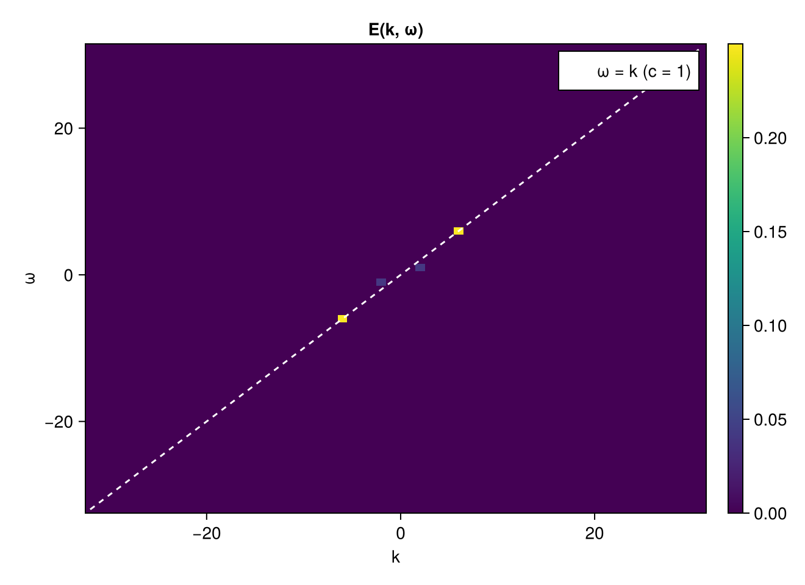

Wavenumber–frequency E(k, ω)
Time is just another spectral axis. Sampling a 1D field f(x, t) on a uniform space–time grid and transforming both axes gives the wavenumber–frequency spectrum E(k, ω), which separates propagating waves (energy on the dispersion line ω = c·k) from non-propagating turbulence.
Here we superpose a propagating wave on a slower background. The package's synthesis convention is f = Σ C(k,ω) e^{+i(k·x + ω·t)}, so a wave written as cos(k₀x + ω₀t) has its spectral peaks on the ω = k diagonal (phase speed c = ω₀/k₀); a mode with a different phase speed lies off it.
using FlowFieldSpectra: FlowFieldSpectra as FFS
using FFTW: FFTW # activates the FFTBackend extension
using CairoMakie: CairoMakie as Mke
import Random
Random.seed!(0)
Nx, Nt = 64, 64
Lx, Lt = 2π, 2π
dx, dt = Lx / Nx, Lt / Nt
x = range(0.0, stop = Lx - dx, length = Nx)
t = range(0.0, stop = Lt - dt, length = Nt)
k0, ω0 = 6.0, 6.0 # phase speed c = ω0/k0 = 1 → on the ω = k line
xv = vec([xi for xi in x, _ in t])
tv = vec([ti for _ in x, ti in t])
wave = @. cos(k0 * xv + ω0 * tv)
background = @. 0.4 * cos(2 * xv + 1.0 * tv + 0.5) # slower, c = 0.5 → off the line
f = wave .+ background
# dim 1 = space (→ k), dim 2 = time (→ ω)
grid = FFS.UniformCartesianGrid((xv, tv); domain_size = (Lx, Lt))
coeffs, ks = FFS.calculate_spectrum(FFS.FFTBackend(), grid, (f,), (Nx, Nt))
kx, kω = ks
Ekω = abs2.(coeffs[:, :, 1])
fig = Mke.Figure(size = (660, 480))
ax = Mke.Axis(fig[1, 1]; title = "E(k, ω)", xlabel = "k", ylabel = "ω")
hm = Mke.heatmap!(ax, kx, kω, Ekω)
Mke.lines!(ax, kx, kx; color = :white, linestyle = :dash, label = "ω = k (c = 1)")
Mke.Colorbar(fig[1, 2], hm)
Mke.axislegend(ax)
fig
The dominant peak sits on the ω = k dispersion line at (k₀, ω₀) = (6, 6) (and its conjugate at (−6, −6)); the weaker background mode lies off the line at a slower phase speed. Building the same field on a fixed nonuniform horizontal grid with the plan reused across time is shown in the 4D fixed-grid example.